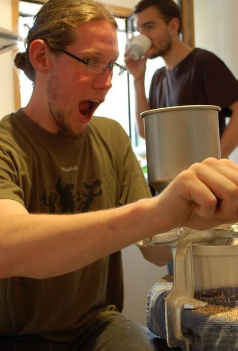
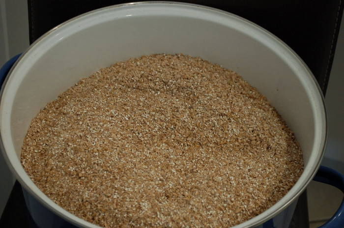
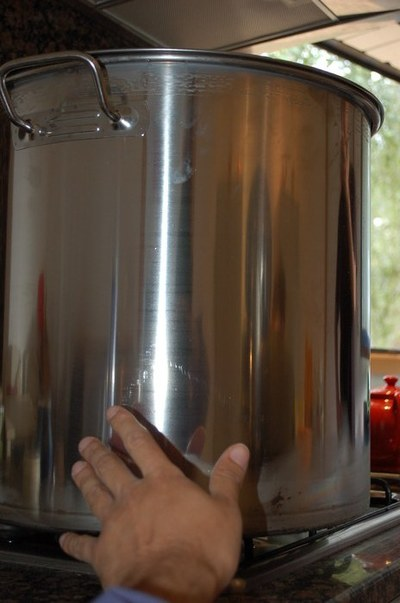
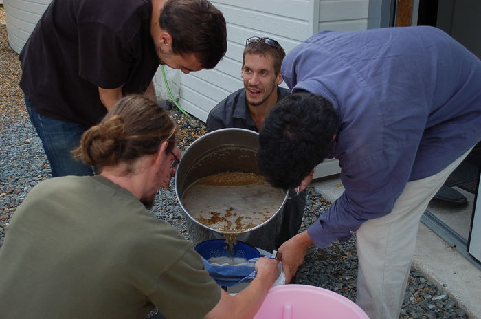
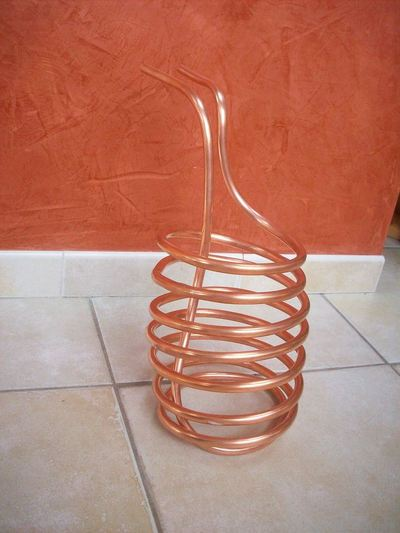
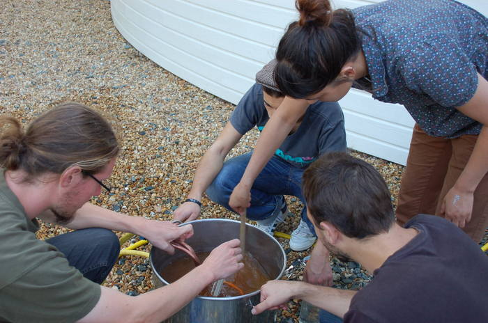

<!DOCTYPE html>
<html lang="en">
  <head>
      <meta http-equiv="X-UA-Compatible" content="IE=edge">
    <meta http-equiv="content-type" content="text/html; charset=utf-8">
    <meta name="viewport" content="width=device-width, initial-scale=1.0, maximum-scale=1">
    <link rel="shortcut icon" type="image/x-icon" href="favicon.ico" />

    <title>Bière maison 33 - Alexis - Carnets en ligne</title>

    <meta charset="utf-8" />
    <link href="https://blog.notmyidea.org/feeds/all.atom.xml" type="application/atom+xml" rel="alternate" title="Alexis - Carnets en ligne Full Atom Feed" />
    <link rel="stylesheet" href="https://blog.notmyidea.org/theme/css/poole.css"/>
    <link rel="stylesheet" href="https://blog.notmyidea.org/theme/css/syntax.css"/>
    <link rel="stylesheet" href="https://blog.notmyidea.org/theme/css/lanyon.css"/>
    <link rel="stylesheet" href="//fonts.googleapis.com/css?family=PT+Serif:400,400italic,700%7CPT+Sans:400">
    <link rel="stylesheet" href="https://blog.notmyidea.org/theme/css/styles.css"/>


<style>

h1 {
    font-family: "Avant Garde", Avantgarde, "Century Gothic", CenturyGothic, "AppleGothic", sans-serif;
    padding: 80px 50px;
    text-align: center;
    text-transform: uppercase;
    text-rendering: optimizeLegibility;
    color: #202020;
    letter-spacing: .1em;
    text-shadow:
        -1px -1px 1px #111,
        2px 2px 1px #eaeaea;
}

#main {
    text-align: justify;
    text-justify: inter-word;
}
#main h1 {
    padding: 10px;
}

.post-headline {
    padding: 15px;
}
</style>
  </head>

  <body>
<!-- Target for toggling the sidebar `.sidebar-checkbox` is for regular
styles, `#sidebar-checkbox` for behavior. -->
<input type="checkbox" class="sidebar-checkbox" id="sidebar-checkbox">
<!-- Toggleable sidebar -->
<div class="sidebar" id="sidebar">
  <div class="sidebar-item">
    <div class="profile">
      
    </div>
  </div>

  <nav class="sidebar-nav">
  <a class="sidebar-nav-item" href="/">Articles</a>

  <a class="sidebar-nav-item" href="https://www.vieuxsinge.com">Brasserie du Vieux Singe</a>
  <a class="sidebar-nav-item" href="http://blog.notmyidea.org/pages/about.html">A propos</a>
  <a class="sidebar-nav-item" href="https://twitter.com/ametaireau">Messages courts</a>
  <a class="sidebar-nav-item" href="https://github.com/almet">Code</a>
  </nav>
</div>    <div class="wrap">
      <div class="masthead">
        <div class="container">
          <h3 class="masthead-title">
            <a href="https://blog.notmyidea.org/" title="Home">Alexis - Carnets en ligne</a>
          </h3>
        </div>
      </div>

      <div class="container content">
<div id="main" class="posts">
<h1 class="post-title">Bière maison 33</h1>
<span class="post-date">04 octobre 2012</span>


<div class="post article">
    <h1>🌟</h1>
    <h1 id="biere-maison-33">Bière maison !</h1>
<p>Et voilà, c'est notre troisième brassin. On a commencé à faire notre
propre bière (avec un ami, Fred) il y a quasiment un an maintenant, et
après quelques dératés, même s'il nous reste encore bien du chemin à
parcourir pour avoir quelque chose qui nous convienne réellement… c'est
pas si pire comme on dit !</p>
<p>Cette fois-çi, on s'est penché sur la confection d'une IPA (Indian Pale
Ale, une bière un peu plus amère que celle qu'on à l'habitude de trouver
en France).</p>
<p>Elle est plus amère car elle comporte plus de houblon que les autres, et
(dans notre cas en tout cas) parce qu'on fait la première fermentation
en présence de houblon.</p>
<h2 id="comment-quon-fait-de-la-biere">Comment qu'on fait de la bière ?</h2>
<p>Machine arrière; n'allons pas trop vite: comment est-ce qu'on fait de la
bière, d'abord ?</p>
<p>En fin de compte, les quelques étapes nécessaire à la confection de la
bière ne sont pas bien sorcières; concassage de l'orge maltée, cuisson
(libération de l'amidon dans l'eau), infusion du houblon,
refroidissement, première fermentation, embouteillage et seconde
fermentation.</p>
<p>L'idée principale est transformer l'amidon d'orge maltée en sucre, pour
le "donner à manger" à des levures. Vous ajoutez un peu de houblon au
milieu pour donner un petit goût amer et le tour est joué. Enfin
presque.</p>
<h2 id="etape-par-etape">Étape par étape</h2>
<p>Première étape: <strong>le concassage</strong>. On avait 6kg d'orge maltée à
concasser (plus exactement 6kg de malt pâle <em>7EDC</em> et 500g de malt cara
<em>50EDC</em>).</p>
<p></p>
<p>Attention, pas trop fin dis donc ! On ne veut pas de la poudre, on veut
simplement permettre à l'amidon de se dissoudre dans l'eau. Si on
concasse le malt trop fin, on se retrouve avec un dépôt dégeulasse au
fond de toutes les bouteilles (c'est l'expérience qui parle, notre
première bière avait plus goût de céréale que de bière…)</p>
<p>Contrairement aux fois précédentes où nous avions utilisé la technique
du marteau et du torchon (oui, comme vous pouvez l'imaginer, c'est assez
long et fastidieux), On a utilisé… un moulin à malt ! Qui nous à permis
de concasser les 6kg en 30 minutes (heureusement qu'on était trois pour
se relayer sur le moulin, parce que nos petits muscles fatiguaient assez
vite; vous pouvez envisager de faire ça tout seul si vous êtes un
tennisman).</p>
<p></p>
<p>La seconde étape, <strong>l'empatage</strong>. Il s'agit de faire chauffer notre orge
maltée à différentes températures. Les fois précédentes, on avait
utilisé plusieurs paliers de température, mais il semble que ça ne soit
pas si nécessaire que ça, selon les informations de l'ami Fred. On à
donc tenté de faire chauffer notre malt directement à 50°C. Une petite
erreur sur la route, on à eu peur de la contamination bactérienne et on
à décidé de faire bouillir nos 26L d'eau pour être sur que les
bactéries s'enfuient en courant. Je dis erreur parce que ça nous à pris
pas loin de 3h30, inertie quand tu nous tiens!</p>
<p>On se rends compte de la taille de la marmite un peu là:</p>
<p></p>
<p>Une fois l'eau à température (54°C), il faut ajouter le malt et le
laisser durant 30mn à cette température, puis augmenter jusqu'à 65°C
durant 1h.</p>
<p>La troisième étape, c'est <strong>le rinçage</strong>, l'idée est de récupérer
l'amidon qui s'est dissout dans l'eau et de mettre de côté l'orge maltée
(la partie solide). Pour ça, il faut faire chauffer de l'eau de rinçage.
On a utilisé 10L d'eau de rinçage qu'on a fait chauffer à 78°C, en
comptant sur le fait qu'elle perdra de sa température (20°C à peu près)
en étant utilisée. On a filtré deux fois pour être sûr de ne rien
perdre.</p>
<p></p>
<p>L'étape d'après (la quatrième, vous suivez), c'est <strong>le houblonnage</strong>.
On va faire infuser notre "solution aqueuse" (wouah, on dirait de la
chimie !) avec du houblon. Il faut porter l'eau à ébullition et laisser
faire durant 1h.</p>
<p>Dernière étape: <strong>le refroidissement</strong>. On dirait que c'est tranquilou
comme ça, mais en fait ça ne l'est pas tant que ça: il faut réussir à
passer notre liquide qui était en ébullition à 54°C en un temps
acceptable. Pour ça, on a utilisé un serpentin confectionné main.</p>
<p></p>
<p>Ça nous a permis de passer de 100°C à 54°C en… 35 minutes quand même !
(Nous avions essayé les fois précédentes de gérer ça à coup de baignoire
et de glaçons, les temps n'étaient absolument pas au rendez-vous).</p>
<p></p>
<p>Je disais dernière étape, mais il ne faut pas oublier de rajouter les
levures, qui elles vont faire tout le travail et transformer tout ça en…
alcool ! Dans notre cas, on ajoute aussi dans la cuve de fermentation
du houblon question de donner l'amertume dont on a envie.</p>
<p>On à mesuré une densité de 1046, ce qui veut dire 6° d'alcool. La cuve
est maintenant en train de buller tranquillement (les levures produisent
du gaz qui est évacué), et ça doit durer 15 jours approximativement.</p>
<h2 id="mise-en-bouteille">Mise en bouteille</h2>
<p>Une fois ces deux semaines passées, il faut mettre en bouteille. Dans
notre cas nous avons récupéré des bouteilles à bouchon mécanique (vous
savez, les bouteilles de limonades) qu'on à bien rincé et nettoyé.</p>
<p>On s'équipe d'un siphon (pensez à prendre un tuyau avec un diamètre
assez important, le notre était petit et c'était assez long) et après
avoir ajouté du sucre dans le mélange (pour réactiver les levures), on
remplit les bouteilles ! Il s'agit de la seconde fermentation, celle
qui va faire les bulles (la première fermentation se charge de l'alcool,
la seconde des bulles).</p>
<p>Et voilà ! Il ne reste plus qu'à mettre les bouteilles de coté durant
deux semaines de plus et… à déguster le moment venu.</p>
<p>On a donc pu tester notre bière la semaine dernière et, ma foi, elle est
pas mal du tout. Elle ne mousse pas trop et à un goût un peu amer.
Malheureusement pas assez à mon goût, mais ça viendra. En comparaison à
nos précédents essais, c'est plutôt positif: la première était ratée
puisque trop de pression et trop de dépôt (et donc un fort goût de
levures) alors que la seconde (on avait tenté d'ajouter de la lavande)
avait un goût de lavande amère, pour ne pas dire de savon.</p>
<p>Cette dernière bière a un goût de… de bière ! Il nous reste encore à
comprendre comment faire pour lui donner la saveur que l'on souhaite,
mais c'est déjà un grand pas en avant. Prochaine étape... La bière de
Noël !</p>
  </div>
</div>
      </div>

      <label for="sidebar-checkbox" class="sidebar-toggle"></label>

      <script>
        (function(document) {
          var i = 0;
          // snip empty header rows since markdown can't
          var rows = document.querySelectorAll('tr');
          for(i=0; i<rows.length; i++) {
            var ths = rows[i].querySelectorAll('th');
            var rowlen = rows[i].children.length;
            if (ths.length > 0 && ths.length === rowlen) {
              rows[i].remove();
            }
          }
        })(document);
      </script>

      <script>
        /* Lanyon & Poole are Copyright (c) 2014 Mark Otto. Adapted to Pelican 20141223 and extended a bit by @thomaswilley */
        (function(document) {
          var toggle = document.querySelector('.sidebar-toggle');
          var sidebar = document.querySelector('#sidebar');
          var checkbox = document.querySelector('#sidebar-checkbox');
          document.addEventListener('click', function(e) {
            var target = e.target;
            if(!checkbox.checked ||
            sidebar.contains(target) ||
            (target === checkbox || target === toggle)) return;
            checkbox.checked = false;
            }, false);
            })(document);
      </script>
      <!-- Piwik -->
      <script type="text/javascript">
        var _paq = _paq || [];
        _paq.push(['trackPageView']);
        _paq.push(['enableLinkTracking']);
        (function() {
          var u="//tracker.notmyidea.org/";
          _paq.push(['setTrackerUrl', u+'piwik.php']);
          _paq.push(['setSiteId', 3]);
          var d=document, g=d.createElement('script'), s=d.getElementsByTagName('script')[0];
          g.type='text/javascript'; g.async=true; g.defer=true; g.src=u+'piwik.js'; s.parentNode.insertBefore(g,s);
        })();
      </script>
      <noscript><p></p></noscript>
      <!-- End Piwik Code -->
     </div>
  </body>
</html>